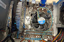
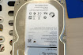

Il "porta CD" nel PC è comunemente noto
come lettore CD/DVD o unità ottica.
È un dispositivo che consente di leggere e, in
alcuni casi, scrivere dati su dischi ottici:
come CD, DVD e Blu-ray.

Un PC ha:
Scheda madre: il cuore del computer.
CPU (processore): il cervello.
RAM: memoria a breve termine.
Disco rigido o SSD: memoria a lungo termine.
Scheda grafica: per video e giochi.
Alimentatore: fornisce energia.
La ventola nel PC serve a mantenere fresco il
computer impedendo che i componenti si surriscaldino.
Aiuta a far circolare l'aria dentro il case,
raffreddando parti come il processore e la scheda grafica.
Senza la ventola, il PC potrebbe bloccarsi o danneggiarsi per il calore eccessivo.

La scheda madre è la componente principale del PC che collega tutti gli altri componenti tra loro.
È come una grande "centralina" dove sono inseriti il processore, la RAM, le schede video, e tutte le altre parti del computer.
Senza di essa, niente funzionerebbe.